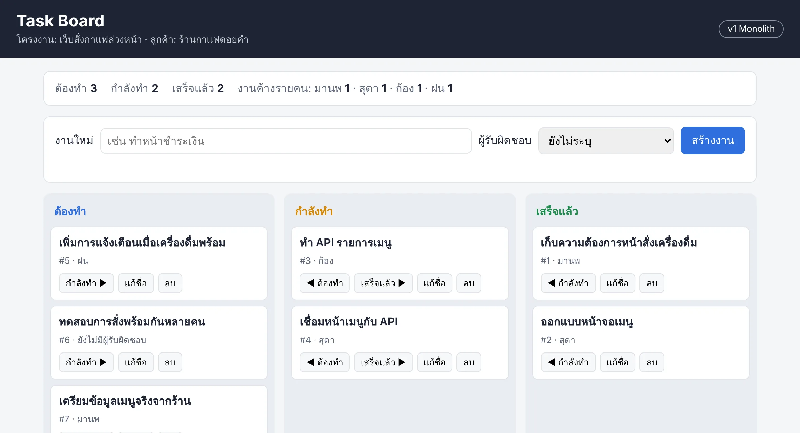

ENGSE207 · ครั้งที่ 2 · เอกสารประกอบการเรียน
ความรับผิดชอบขององค์ประกอบและเส้นทางข้อมูล
บทนำครั้งนี้อยู่ตรงไหนของภาค และต้องเตรียมอะไร
ครั้งที่ 1 เราอ่านโค้ด 5 ไฟล์ของคำขอ “สร้างงาน” บนกระดาษ ตั้งแต่หน้าจอ React ผ่าน route → service → repository จนถึงฐานข้อมูล โค้ดชุดนั้นเป็น ระบบรุ่นที่ทีมจะไปถึงกลางภาค เราดูปลายทางก่อนเพื่อให้รู้ว่ากำลังเดินไปทางไหน
ตั้งแต่ครั้งนี้ เราจะ ย้อนกลับไปเริ่มจากรุ่นที่เล็กที่สุด แล้วให้ระบบโตขึ้นทีละรุ่น ทุกครั้งที่เปลี่ยนรุ่น ทีมจะได้เห็นเองว่ารุ่นเดิมมีปัญหาอะไร และรูปแบบสถาปัตยกรรมใหม่แก้ปัญหานั้นได้แค่ไหน แลกกับอะไร นี่คือวิธีที่สถาปนิกทำงานจริง คือไม่เลือกสถาปัตยกรรมเพราะชื่อดัง แต่เลือกเพราะปัญหาที่เห็นจากระบบของตัวเอง
เรียนมาถึงไหนแล้ว
| สิ่งที่ได้จากครั้งที่ 1 | ได้มาอย่างไร | ครั้งนี้ใช้ต่อ |
|---|---|---|
| สถาปัตยกรรม = โครงสร้าง + เหตุผล | สไลด์ 2 และเอกสารครั้งที่ 1 | อธิบายว่า v1 จะต้องเปลี่ยนเพราะอะไร |
| R · A · D และคุณลักษณะคุณภาพ | คำถามแยก R · A · D ในห้อง | นับจุดที่ต้องแก้ ซึ่งเป็นตัววัด modifiability |
| ตามคำขอ “สร้างงาน” 5 ไฟล์ | อ่านโค้ดบนกระดาษ สไลด์ 2 และปฏิบัติ T01 | ตามคำขอเดียวกันในระบบที่ รันจริง |
| ทีม repo และ team charter | ปฏิบัติ T01 สร้าง repo จากแม่แบบ | P02 นำโค้ด v1 เข้า repo ทีม |
| เครื่องพร้อมรัน Docker | check-docker ที่บ้าน | รัน v1 บน iMac และเครื่องตัวเอง |
| ภาพ C4 ระดับ Container | สไลด์ 2 ของครั้งที่ 1 (ภาพระบบปลายทาง) | แยก C4 Container ออกจาก Docker container (ส่วนที่ 4) |
- สถาปัตยกรรมซอฟต์แวร์ในหนึ่งประโยคแนวคำตอบโครงสร้างหลักของระบบ คือส่วนประกอบ ความสัมพันธ์ และคุณสมบัติ พร้อมเหตุผลของการเลือก
- ฟังก์ชันกับคุณลักษณะคุณภาพต่างกันอย่างไรแนวคำตอบฟังก์ชันบอกว่าระบบ ทำอะไร คุณภาพบอกว่า ทำได้ดีแค่ไหน เช่น เปลี่ยนง่าย เร็ว ไม่ล่ม คุณภาพเป็นตัวผลักให้เลือกโครงสร้าง
- กด “สร้างงาน” โดยไม่ใส่ชื่อ คำขอหยุดที่ไหน และได้ status อะไรแนวคำตอบหยุดที่ API ก่อนถึงฐานข้อมูล ได้ 400 พร้อมข้อความ “กรุณาใส่ชื่องาน”
- ทำไมกฎที่ต้องเป็นจริงเสมอต้องอยู่ที่ API ไม่ใช่หน้าจอแนวคำตอบหน้าจออยู่นอกขอบเขตความเชื่อถือ ใครก็ส่งคำขอตรงมาที่ API ได้โดยไม่ผ่านหน้าจอ
ครั้งนี้เตรียมมาก่อนเข้าห้อง
สัปดาห์ที่ 2 มหาวิทยาลัยหยุด (30 พ.ย.–4 ธ.ค. 2569) เราใช้ช่วงนี้ อ่านทฤษฎีและเตรียมระบบล่วงหน้า ในห้องจึงเป็นการบรรยายสรุปทฤษฎี 2 ชั่วโมง แล้วลงมือกับระบบจริง 3 ชั่วโมงบน iMac ของห้องแล็บ · วัน เวลา และห้องของแต่ละ SEC ดูที่หน้า สิ่งที่ต้องส่ง
- อ่านเอกสารนี้ ทั้งฉบับ ใช้เวลาประมาณ 90 นาที ตอบคำถามในกรอบด้วยตัวเองก่อนคลิกดูแนวคำตอบ
- ตัวแทนทีมนำโค้ด Task Board v1 เข้า repo ทีม แล้ว push ขึ้น
main(ระบบตรวจการส่งงานจะเห็นไฟล์docker-compose.yml) - ทุกคนที่เครื่องผ่าน check-docker ลองรันระบบที่บ้านหนึ่งรอบ ใครยังรันไม่ได้ให้จดอาการไว้ แล้วมารันบน iMac ในห้อง
หลังอ่านแล้วคุณจะทำได้
- บอกได้ว่าองค์ประกอบหนึ่งรับผิดชอบเรื่องอะไร และใช้ separation of concerns, cohesion, coupling อธิบายว่าการแบ่งหน้าที่แบบหนึ่งดีหรือไม่ดีเพราะอะไร
- อธิบายว่า Monolith คืออะไร ทำไมระบบส่วนใหญ่เริ่มจากรูปแบบนี้ และชี้จุดในโค้ด Task Board v1 ที่จะเป็นปัญหาเมื่อระบบโตขึ้น
- ตามค่าหนึ่งค่าจาก event บนหน้าจอ ผ่าน fetch, HTTP/JSON, route ในเซิร์ฟเวอร์ และ SQL จนถึงฐานข้อมูล แล้วกลับมาที่หน้าจอ ทั้งกรณีปกติและกรณีผิดพลาด
- อ่าน HTTP method และ status code ที่ระบบใช้ แยก 400 กับ 500 ได้ และอธิบายว่าทำไมกฎที่ต้องเป็นจริงเสมอต้องอยู่ฝั่งเซิร์ฟเวอร์
- รันระบบด้วย Docker Compose ดูสถานะและ log ได้ และแยก C4 Container ออกจาก Docker container
- แก้โค้ดหนึ่งจุด ตรวจ
git diffกับคู่ แล้ว commit ด้วยข้อความที่บอกว่าเปลี่ยนอะไรและทำไม
ส่วนที่ 1องค์ประกอบ ความรับผิดชอบ และหลักการแบ่งหน้าที่
- ถ้าเขียนโปรแกรม Task Board ทั้งหมดไว้ในฟังก์ชันเดียวยาว 500 บรรทัด ระบบยังทำงานได้ไหม และอะไรจะยากขึ้นแนวคำตอบทำงานได้ คอมพิวเตอร์ไม่สนว่าโค้ดแบ่งอย่างไร แต่คนจะลำบาก หาจุดที่ต้องแก้ยาก แก้เรื่องหนึ่งแล้วกระทบอีกเรื่องโดยไม่ตั้งใจ ทดสอบทีละส่วนไม่ได้ และหลายคนแก้ไฟล์เดียวกันพร้อมกันไม่ได้ การแบ่งหน้าที่จึงเป็นเรื่องของการเปลี่ยนแปลงและการทำงานร่วมกัน ไม่ใช่เรื่องว่าโปรแกรมรันได้หรือไม่
1.1 องค์ประกอบคืออะไร
องค์ประกอบ (component) คือส่วนหนึ่งของระบบที่มี หน้าที่ชัดเจน มี ขอบเขต ว่าอะไรอยู่ข้างในและอะไรอยู่ข้างนอก และ คุยกับส่วนอื่นผ่านช่องทางที่ตกลงกันไว้ (interface หรือสัญญา) องค์ประกอบมีได้หลายขนาด ขึ้นกับว่าเรามองระบบที่ระดับไหน
| ระดับที่มอง | องค์ประกอบคือ | ตัวอย่างใน Task Board | คุยกันผ่าน |
|---|---|---|---|
| ในโค้ด | ฟังก์ชัน คลาส ไฟล์ หรือโมดูล | renderBoard() ใน app.js · ส่วนที่ 5 ใน server.js | การเรียกฟังก์ชันและค่าที่ส่งกลับ |
| ในการรัน | โปรแกรมที่รันแยกกัน (process) | เบราว์เซอร์ · แอป Node.js · PostgreSQL | HTTP/JSON · โปรโตคอลของ PostgreSQL |
| ในการติดตั้ง | เครื่องหรือ container ที่ติดตั้งแยกกัน | container app และ db | เครือข่าย (network) และพอร์ต |
คำถามที่สถาปนิกถามเสมอเมื่อเห็นองค์ประกอบหนึ่งคือ “ส่วนนี้รับผิดชอบเรื่องอะไร และเรื่องอะไรที่ไม่ควรรู้” ถ้าตอบไม่ได้ในหนึ่งประโยค แปลว่าส่วนนั้นอาจทำหลายเรื่องเกินไป
1.2 Separation of Concerns: แยกเรื่องที่เปลี่ยนด้วยเหตุผลต่างกัน
Concern คือ “เรื่อง” ที่ระบบต้องดูแล หลักการ separation of concerns (SoC) บอกให้แยกเรื่องที่ เปลี่ยนด้วยเหตุผลต่างกัน ออกจากกัน เช่น ลูกค้าอยากเปลี่ยนสีปุ่มเป็นเหตุผลด้านหน้าตา ส่วนลูกค้าอยากเปลี่ยนกฎว่างานที่ยังไม่มีผู้รับผิดชอบเริ่มทำไม่ได้เป็นเหตุผลด้านธุรกิจ ถ้าสองเรื่องนี้อยู่ปนกันในฟังก์ชันเดียว การเปลี่ยนเรื่องหนึ่งก็เสี่ยงทำอีกเรื่องพัง
| Concern ของ Task Board | เปลี่ยนเมื่อ | อยู่ที่ไหนในรุ่น v1 |
|---|---|---|
| แสดงผล | อยากได้หน้าตาหรือการจัดวางใหม่ | public/index.html style.css และส่วน C ของ app.js |
| โต้ตอบกับผู้ใช้ | เปลี่ยนวิธีกดหรือกรอกข้อมูล | ส่วน D ของ app.js |
| สื่อสารผ่านเครือข่าย | เปลี่ยน URL รูปแบบข้อมูล หรือวิธีจัดการ error | ส่วน B ของ app.js และการรับคำขอใน server.js |
| กฎของงาน (business rules) | ลูกค้าเปลี่ยนนโยบาย | กระจายอยู่ในส่วนที่ 5.2–5.5 ของ server.js |
| เก็บและค้นข้อมูล | เปลี่ยนตาราง เปลี่ยนฐานข้อมูล หรือปรับความเร็ว | คำสั่ง SQL ที่แทรกอยู่ในแต่ละ route ของ server.js |
| ตั้งค่าและการเชื่อมต่อ | ย้ายเครื่อง เปลี่ยนรหัสผ่าน ขึ้น Cloud | ส่วนที่ 1 ของ server.js และ docker-compose.yml |
สังเกตแถวที่ 4 และ 5 กฎของงานกับคำสั่ง SQL ไม่มีที่อยู่ของตัวเอง แต่ฝังอยู่ใน route ทุกตัว นี่คือลักษณะของ v1 ที่เราจะพบปัญหาเองในห้อง และจะแก้ในครั้งที่ 4
1.3 Cohesion: ข้างในเกาะกันแค่ไหน
Cohesion คือระดับที่สิ่งต่าง ๆ ภายในองค์ประกอบเดียวกัน ทำงานเพื่อเป้าหมายเดียวกัน องค์ประกอบที่ cohesion สูงอธิบายได้ในประโยคเดียว เช่น “ไฟล์นี้เก็บและค้นข้อมูลงาน” ส่วนองค์ประกอบที่ cohesion ต่ำต้องอธิบายด้วยคำว่า “และ” หลายครั้ง เช่น “ไฟล์นี้วาดหน้าจอ และตรวจกฎ และเขียน SQL และตั้งค่าเชื่อมต่อ”
- ดูอย่างไร ถ้าแก้เรื่องหนึ่งแล้วต้องเลื่อนอ่านโค้ดของเรื่องอื่นที่ไม่เกี่ยวผ่านไปเรื่อย ๆ หรือฟังก์ชันหนึ่งมีตัวแปรที่ใช้คนละเรื่องกัน cohesion มักต่ำ
- ใน v1 แต่ละ route ในส่วนที่ 5 มี cohesion พอใช้ เพราะดูแลคำขอเดียว แต่
server.jsทั้งไฟล์มี cohesion ต่ำ เพราะรวมทุกเรื่องของระบบไว้
1.4 Coupling: ต่างส่วนผูกกันแน่นแค่ไหน
Coupling คือระดับที่องค์ประกอบหนึ่ง ต้องรู้หรือพึ่งพารายละเอียดภายใน ของอีกองค์ประกอบ ยิ่งรู้มาก ยิ่งต้องแก้ตามกันมากเมื่อฝั่งหนึ่งเปลี่ยน เราอยากให้แต่ละส่วนรู้จักกันผ่าน สัญญา ที่ตกลงกันไว้เท่านั้น
| แบบของการผูกกัน | ตัวอย่างใน Task Board v1 | ถ้าเปลี่ยนจะเกิดอะไร |
|---|---|---|
| ผ่านสัญญา (หลวม) | หน้าจอรู้แค่ว่า POST /api/tasks รับ {"title": ...} และตอบ 201 หรือ 400 | เปลี่ยนฐานข้อมูลข้างหลังได้ หน้าจอไม่ต้องแก้ |
| ผ่านรูปร่างข้อมูล | app.js ใช้ t.assignee_name ซึ่งเป็นชื่อที่ตั้งในคำสั่ง SQL ของ server.js | ถ้าเปลี่ยนชื่อในคำสั่ง SQL หน้าจอจะแสดง “ยังไม่มีผู้รับผิดชอบ” ทุกงาน โดยไม่มี error ใดเตือน |
| ผ่านกฎที่ซ้ำกัน | กฎ “ต้องมีชื่องาน” เขียนไว้สองที่ ในส่วนที่ 5.2 (สร้าง) และ 5.3 (แก้ชื่อ) | แก้กฎที่เดียว อีกที่ยังใช้กฎเก่า ข้อมูลผิดกฎหลุดเข้าฐานข้อมูลได้ |
| ผ่านโครงสร้างตาราง | ทุก route เขียน SQL ตรงกับชื่อคอลัมน์ของตาราง tasks | เปลี่ยนชื่อคอลัมน์หนึ่ง ต้องตามแก้ทุก route ที่ใช้ |
1.5 Modularity และการซ่อนรายละเอียด
เมื่อรวมสองหลักข้างบน เราได้เป้าหมายที่เรียกว่า modularity คือระบบประกอบจากชิ้นที่ ข้างในเกาะกันแน่น (high cohesion) และ ข้างนอกผูกกันหลวม (low coupling) แต่ละชิ้น ซ่อนรายละเอียด ที่คนอื่นไม่จำเป็นต้องรู้ (information hiding) เช่น หน้าจอไม่ต้องรู้ว่างานเก็บในตารางชื่ออะไร รู้แค่ว่าเรียก GET /api/tasks แล้วได้รายการงานกลับมา
- ประโยคเดียว: อธิบายหน้าที่ของส่วนนี้ได้ในหนึ่งประโยคโดยไม่ใช้คำว่า “และ” ไหม
- เหตุผลเดียว: ส่วนนี้จะถูกแก้ด้วยเหตุผลประเภทเดียวไหม (หน้าตา กฎธุรกิจ หรือการเก็บข้อมูล)
- ผลกระทบ: ถ้าข้างในส่วนนี้เปลี่ยน ส่วนอื่นต้องแก้ตามกี่ที่
การแบ่งเป็นชิ้นเล็กมากเกินไปทำให้ต้องเปิดหลายไฟล์เพื่อเข้าใจเรื่องเดียว และต้องส่งข้อมูลข้ามชิ้นไปมา ระบบเล็กอย่าง v1 จึงยังไม่จำเป็นต้องแบ่งละเอียด สิ่งที่สถาปนิกทำคือ แบ่งเมื่อมีเหตุผล เช่น เมื่อเห็นว่ากฎเดียวกันถูกเขียนซ้ำ หรือเมื่อหลายคนต้องแก้ไฟล์เดียวกันพร้อมกันบ่อย ๆ
- ทำไมการที่
app.jsใช้ชื่อassignee_nameจาก SQL จึงนับเป็น coupling ทั้งที่สองไฟล์อยู่คนละฝั่งของเครือข่ายแนวคำตอบcoupling ไม่ได้วัดจากระยะทาง แต่วัดจากสิ่งที่ต้องรู้ หน้าจอต้องรู้ชื่อที่ฝั่งฐานข้อมูลตั้งไว้ จึงต้องแก้ตามเมื่อฝั่งนั้นเปลี่ยน ถ้าต้องการลด coupling ควรกำหนดรูปร่าง JSON เป็นสัญญาของ API แยกจากชื่อในฐานข้อมูล แล้วให้เซิร์ฟเวอร์แปลงให้ - ฟังก์ชัน
renderBoard()ในapp.jsมี cohesion สูงหรือต่ำ ดูจากอะไรแนวคำตอบค่อนข้างสูง เพราะทำเรื่องเดียว คือวาดรายการงานจาก state ลงหน้าจอ ไม่เรียก API ไม่ตรวจกฎ ถ้าอยากเปลี่ยนหน้าตาการ์ดงาน แก้ที่ฟังก์ชันนี้ที่เดียว - กฎ “งานที่กำลังทำลบไม่ได้” ควรอยู่กับ concern ไหน และใน v1 อยู่ที่ไหนแนวคำตอบเป็น กฎของงาน (business rule) ใน v1 อยู่ใน route ลบงาน (ส่วนที่ 5.5 ของ
server.js) ปนกับการรับคำขอ HTTP และคำสั่ง SQL ในครั้งที่ 4 จะย้ายไปอยู่ในส่วนที่ดูแลกฎของงานโดยเฉพาะ
ส่วนที่ 2Task Board รุ่นแรก: Monolith
2.1 Monolith คืออะไร
Monolith คือระบบที่ทุกหน้าที่ของแอปพลิเคชัน สร้าง ติดตั้ง และรันเป็นหน่วยเดียว ในรุ่น v1 ของ Task Board โปรแกรม Node.js ตัวเดียว (server.js) ทำทุกอย่าง คือส่งหน้าเว็บให้เบราว์เซอร์ รับคำขอ API ตรวจกฎของงาน และเขียนคำสั่ง SQL ไปที่ PostgreSQL จะแก้เรื่องเล็กแค่ไหนก็ต้องรีสตาร์ตทั้งโปรแกรม และถ้าโปรแกรมนี้หยุด ทุกฟีเจอร์ก็หยุดพร้อมกัน
ฐานข้อมูลแยกเป็นโปรแกรมต่างหากก็ยังนับเป็น Monolith เพราะ ตัวแอปพลิเคชัน ยังเป็นก้อนเดียว ลักษณะที่ใช้ดูว่าเป็น Monolith หรือไม่มี 4 ข้อ
| ลักษณะ | ความหมาย | ใน Task Board v1 |
|---|---|---|
| codebase เดียว | โค้ดของทุกฟีเจอร์อยู่ในโปรเจกต์เดียว | โฟลเดอร์ app/ โฟลเดอร์เดียว |
| deploy หน่วยเดียว | แก้ฟีเจอร์ไหนก็ต้องติดตั้งใหม่ทั้งก้อน | container app ตัวเดียว |
| process เดียว | ทุกคำขอใช้หน่วยความจำและ CPU ชุดเดียวกัน | Node.js หนึ่ง process ตอบทุก URL |
| เรียกกันในโปรแกรม | ส่วนต่าง ๆ เรียกกันเป็นฟังก์ชัน ไม่ผ่านเครือข่าย | route เรียก db.query() ตรง ๆ |
2.2 ทำไมเริ่มจาก Monolith
Monolith ไม่ได้แปลว่าไม่ดี ระบบใหญ่จำนวนมากเริ่มจากรูปแบบนี้ เพราะตอนเริ่มต้นทีมยังไม่รู้ว่าระบบจะโตไปทางไหน การแยกเป็นหลายส่วนตั้งแต่วันแรกมักแยกผิดที่ แล้วต้องรื้อใหม่ Martin Fowler เรียกแนวทางนี้ว่า Monolith First คือเริ่มจากก้อนเดียวที่ดูแลง่าย แล้วค่อยแยกเมื่อเห็นเหตุผลจริง
| ได้อะไรตอนระบบยังเล็ก | ต้นทุนที่โตขึ้นเมื่อระบบใหญ่ขึ้น |
|---|---|
| เขียนและรันง่าย มีโปรแกรมเดียวต้องเปิด | ไฟล์ยาวขึ้นเรื่อย ๆ หาจุดแก้ยาก กฎกระจายและซ้ำกัน |
| ไล่ปัญหาง่าย ตาม log ที่เดียวเห็นทั้งเส้นทาง | ส่วนเดียวพังหรือใช้ CPU มาก ส่งผลกับผู้ใช้ทุกคน |
| เรียกกันเป็นฟังก์ชัน เร็ว ไม่มีปัญหาเครือข่ายระหว่างส่วน | ขยายได้ทั้งก้อนเท่านั้น แม้มีแค่ส่วนเดียวที่ทำงานหนัก |
| deploy ครั้งเดียวได้ทุกฟีเจอร์ | แก้เรื่องเล็กก็ต้อง deploy ทั้งระบบ หลายทีมรอกันและชนกัน |
| ข้อมูลอยู่ฐานเดียว ทำ transaction ง่าย | ทุกส่วนผูกกับโครงสร้างตารางเดียวกัน เปลี่ยนตารางกระทบทั้งระบบ |
คอลัมน์ขวาคือสิ่งที่ทีมจะ วัดและเห็นเอง ในครั้งที่ 2 และ 3 แล้วใช้เป็นเหตุผลในการเปลี่ยนรุ่นครั้งถัดไป
2.3 แผนที่โค้ดของ v1

repo ทีม/ ├── docker-compose.yml # รัน 2 container: app และ db ├── .env.example # ค่าตั้งต้น คัดลอกเป็น .env ได้ ├── RUN.md # วิธีรัน คำสั่ง และแผนที่โค้ด ├── app/ │ ├── server.js # ทั้งแอปอยู่ที่นี่ ประมาณ 230 บรรทัด │ ├── public/ # ไฟล์ที่ส่งไปรันในเบราว์เซอร์ │ │ ├── index.html │ │ ├── app.js │ │ └── style.css │ ├── Dockerfile │ └── package.json # express, pg, nodemon ├── db/init/ │ ├── 01-schema.sql # ตาราง members, projects, tasks │ └── 02-seed.sql # ข้อมูลสมมติ ├── docs/ individual/ templates/ # ของทีมเดิมจาก T01
server.js แบ่งเป็น 7 ส่วนด้วยหัวข้อในคอมเมนต์ ค้นคำว่า ส่วนที่ เพื่อกระโดดไปยังแต่ละส่วนได้
| ส่วน | ทำอะไร | concern |
|---|---|---|
| 1 | สร้าง connection pool ไปที่ PostgreSQL จากค่า environment | ตั้งค่า · การเชื่อมต่อ |
| 2 | อ่าน JSON ส่งไฟล์ใน public/ และพิมพ์ log ทุกคำขอ API | รับคำขอ · แสดงผล |
| 3 | GET /api/health ตรวจว่าแอปและฐานข้อมูลพร้อม | การดูแลระบบ |
| 4 | GET /api/members รายชื่อสมาชิก | รับคำขอ + SQL |
| 5.1–5.5 | ดู สร้าง แก้ชื่อ เปลี่ยนสถานะ และลบงาน | รับคำขอ + กฎของงาน + SQL ปนกัน |
| 6 | GET /api/summary สรุปจำนวนงานและงานค้างรายคน | รายงาน (ใช้ทดลองในครั้งที่ 3) |
| 7 | เริ่มฟังพอร์ต 3000 | การรัน |
ฝั่งเบราว์เซอร์ public/app.js แบ่งเป็นส่วน A–E คือ A state ของหน้าจอ · B ฟังก์ชันเรียก API · C วาดหน้าจอจาก state · D รับ event จากผู้ใช้ · E เริ่มต้นโหลดข้อมูล
2.4 จุดที่ควรสังเกตใน v1
โค้ด v1 ทำงานถูกต้องตามที่ลูกค้าขอในตอนนี้ แต่มี 4 จุดที่สถาปนิกจะจดไว้ เพราะจะกลายเป็นปัญหาเมื่อระบบเปลี่ยน
| จุดที่สังเกต | ตรงไหนในโค้ด | คุณภาพที่ได้รับผลกระทบ | จัดการในครั้งที่ |
|---|---|---|---|
| กฎซ้ำหลายที่ | กฎชื่องานในส่วนที่ 5.2 และ 5.3 | แก้ไขได้ง่าย (modifiability) | T02 สังเกตและแก้ · T04 ย้ายไปที่เดียว |
| route ทำสามเรื่อง | ทุก route ในส่วนที่ 5 รับ HTTP + ตรวจกฎ + เขียน SQL | แก้ไขได้ง่าย · ทดสอบได้ง่าย | T04 แยกชั้น |
| ไม่ตรวจค่าสถานะ | ส่วนที่ 5.4 ปล่อยให้ฐานข้อมูลปฏิเสธเอง ผู้ใช้ได้ 500 แทน 400 | ความถูกต้องของการตอบ · ใช้งานได้ดี | ฝึกแก้หลังเรียน T02 |
| ใช้ CPU ร่วมกันทุกคำขอ | ส่วนที่ 6 ถ้ารายงานคำนวณหนัก คำขออื่นต้องรอ | performance · scalability | T03 วัดผล · T10 แยกบริการ |
ในห้องทีมจะแก้กฎชื่องานหนึ่งเรื่องและจดว่าต้องแก้กี่ที่ ส่วนการจัดโครงสร้างใหม่ทั้งไฟล์เป็นงานของครั้งที่ 4 การเห็นปัญหาก่อนแล้วค่อยแก้ ทำให้เรามีหลักฐานว่าการแยกชั้นแก้ปัญหาอะไรได้จริง และเขียนเป็นเหตุผลใน ADR ได้
- ถ้าฐานข้อมูลแยกเป็น container ของตัวเอง ทำไม v1 ยังเรียกว่า Monolithแนวคำตอบเพราะคำว่า Monolith ดูที่ตัวแอปพลิเคชัน ทุกหน้าที่ของแอป (หน้าเว็บ API กฎ การเข้าถึงข้อมูล) ยังสร้าง ติดตั้ง และรันเป็นหน่วยเดียว ฐานข้อมูลเป็นซอฟต์แวร์สำเร็จรูปที่แอปเรียกใช้ การแยกฐานข้อมูลออกเป็น container จึงไม่ได้ทำให้แอปแยกเป็นหลายส่วน
- ระบบเล็กที่มีผู้ใช้ 20 คนและนักพัฒนา 2 คน ควรเริ่มเป็น Monolith หรือหลายบริการ เพราะอะไรแนวคำตอบส่วนใหญ่ควรเริ่มเป็น Monolith เพราะดูแลง่าย รันง่าย ไล่ปัญหาง่าย และทีมยังไม่รู้ว่าจะแยกที่เส้นไหนถึงจะถูก ข้อดีของหลายบริการ เช่น ขยายเฉพาะส่วนหรือให้หลายทีม deploy แยกกัน ยังไม่จำเป็นกับขนาดนี้ แต่ต้นทุนเรื่องเครือข่าย การ deploy และการไล่ปัญหาจะเกิดทันที
- ทำไมการไม่ตรวจค่าสถานะในส่วนที่ 5.4 ทำให้ผู้ใช้ได้ status 500 ไม่ใช่ 400แนวคำตอบเมื่อส่งค่าที่ไม่รู้จัก เช่น
"flying"โค้ดส่งต่อไปถึงคำสั่งUPDATEฐานข้อมูลปฏิเสธเพราะ CHECK constraint แล้วโยน error ซึ่งถูกจับในcatchที่ตอบ 500 ทุกกรณี ระบบจึงบอกผู้ใช้ว่า “ระบบผิดพลาด” ทั้งที่จริงเป็นข้อมูลที่ผู้ใช้ส่งมาผิด ควรตรวจค่าก่อนแล้วตอบ 400 พร้อมข้อความที่บอกว่าแก้อย่างไร
ส่วนที่ 3เส้นทางข้อมูล: จากปุ่มบนหน้าจอถึงฐานข้อมูล
- Task Board v1 เป็น Monolith แต่ทำไมยังพูดได้ว่ามีรูปแบบ Client–Server อยู่ข้างในแนวคำตอบเพราะโค้ดรันอยู่สองที่
app.jsถูกส่งไปรันในเบราว์เซอร์ของผู้ใช้ (client) ส่วนserver.jsรันบนเครื่องที่ติดตั้งระบบ (server) ทั้งสองคุยกันผ่านเครือข่ายด้วย HTTP/JSON Monolith บอกว่าฝั่งเซิร์ฟเวอร์เป็นก้อนเดียว ส่วน Client–Server บอกว่าใครขอและใครตอบ สองคำนี้จึงใช้พร้อมกันได้
3.1 สามฝ่ายที่คุยกันในหนึ่งคำขอ
| ฝ่าย | รันที่ไหน | รับผิดชอบ | ไม่ควรรู้ |
|---|---|---|---|
| เบราว์เซอร์ (client) | เครื่องผู้ใช้ | แสดงผล รับ event ส่งคำขอ และแสดงผลลัพธ์หรือข้อความผิดพลาด | ตาราง คำสั่ง SQL รหัสผ่านฐานข้อมูล |
| แอป Node.js (server) | container app | รับคำขอ ตรวจกฎ อ่านเขียนข้อมูล และตอบด้วย status ที่ถูกต้อง | หน้าตาของปุ่มหรือการจัดวาง |
| PostgreSQL (database server) | container db | เก็บข้อมูลอย่างถาวร บังคับโครงสร้างและข้อจำกัดของตาราง | ว่าคำขอมาจากหน้าจอไหน |
สังเกตว่าแอป Node.js เป็นทั้ง server ของเบราว์เซอร์ และเป็น client ของ PostgreSQL บทบาท client หรือ server จึงขึ้นกับว่าเรามองการคุยคู่ไหน
3.2 หน้าตาของคำขอและคำตอบ HTTP
| Method | ความหมาย | ใน Task Board v1 |
|---|---|---|
| GET | ขอดูข้อมูล ไม่เปลี่ยนอะไรในระบบ | /api/tasks /api/members /api/summary /api/health |
| POST | สร้างสิ่งใหม่ | /api/tasks |
| PATCH | แก้บางส่วนของสิ่งที่มีอยู่ | /api/tasks/:id แก้ชื่อ · /api/tasks/:id/status เปลี่ยนสถานะ |
| DELETE | ลบ | /api/tasks/:id |
| Status | ความหมาย | ตัวอย่างใน Task Board v1 | ใครต้องแก้ |
|---|---|---|---|
| 200 OK | สำเร็จ และมีข้อมูลตอบกลับ | ดูรายการงาน แก้ชื่อ เปลี่ยนสถานะสำเร็จ | — |
| 201 Created | สร้างสำเร็จ | สร้างงานใหม่ | — |
| 204 No Content | สำเร็จ ไม่มีข้อมูลตอบกลับ | ลบงาน | — |
| 400 Bad Request | ข้อมูลที่ส่งมาผิดกฎ | ชื่องานว่าง · เริ่มทำงานที่ยังไม่มีผู้รับผิดชอบ · ลบงานที่กำลังทำ | ผู้ใช้แก้ข้อมูลแล้วส่งใหม่ |
| 404 Not Found | ไม่พบสิ่งที่ขอ | แก้หรือลบงาน id ที่ไม่มี | ผู้ใช้ หรือหน้าจอที่ส่ง id ผิด |
| 500 Internal Server Error | ฝั่งเซิร์ฟเวอร์ผิดพลาด | SQL ผิด ฐานข้อมูลปฏิเสธ หรือโค้ดมีบั๊ก | ทีมพัฒนา ดูจาก log |
| 503 Service Unavailable | บริการยังไม่พร้อม | /api/health เมื่อฐานข้อมูลหยุด | ผู้ดูแลระบบ |
จำง่าย ๆ ว่า 2xx สำเร็จ · 4xx ผู้ส่งต้องแก้ · 5xx ระบบต้องแก้ การตอบ status ให้ถูกกลุ่มสำคัญกับสถาปัตยกรรม เพราะส่วนอื่น (หน้าจอ แอปมือถือ ระบบเฝ้าดู) ใช้ status ตัดสินว่าจะทำอะไรต่อ เช่น 5xx อาจลองส่งใหม่ แต่ 4xx ส่งใหม่กี่ครั้งก็ไม่ผ่าน
3.3 JSON คือสัญญาระหว่างหน้าจอกับเซิร์ฟเวอร์
JSON (JavaScript Object Notation) เป็นข้อความรูปแบบหนึ่งที่ทั้งสองฝั่งตกลงกันว่าจะใช้ ตอนส่งออกจากเบราว์เซอร์ อ็อบเจกต์ถูกแปลงเป็นข้อความด้วย JSON.stringify() ฝั่งเซิร์ฟเวอร์ express.json() แปลงกลับเป็นอ็อบเจกต์ใน req.body และตอนตอบกลับก็แปลงทางกลับกัน สัญญาของ POST /api/tasks มีดังนี้
| รูปร่าง | หมายเหตุ | |
|---|---|---|
| ส่งไป | {"title": "ข้อความ", "assigneeId": 2 หรือ null} | assigneeId ไม่ใส่ก็ได้ |
| สำเร็จ 201 | {"id", "title", "status", "assignee_id", "created_at"} | status เป็น "todo" เสมอ |
| ผิดกฎ 400 | {"error": "ข้อความอธิบายที่ผู้ใช้อ่านเข้าใจ"} | หน้าจอแสดงข้อความนี้ใต้ฟอร์ม |
| ระบบผิดพลาด 500 | {"error": "เกิดข้อผิดพลาดในระบบ"} | ไม่บอกรายละเอียดภายใน รายละเอียดอยู่ใน log |
3.4 ฝั่งเบราว์เซอร์: event → state → fetch → render
หน้าจอ v1 เขียนด้วย JavaScript ธรรมดา ไม่ใช้ React แต่ใช้ความคิดเดียวกับที่เห็นใน TaskForm.jsx ของครั้งที่ 1 คือ รับ event → ส่งคำขอ → เก็บผลไว้ใน state → วาดหน้าจอใหม่จาก state
app/public/app.jsส่วน D · รับ event จากฟอร์ม
$("task-form").addEventListener("submit", async (event) => {
event.preventDefault(); // ไม่ให้เบราว์เซอร์โหลดหน้าใหม่
$("form-error").textContent = "";
try {
await api.createTask({ title: $("title").value, assigneeId: $("assignee").value || null });
$("title").value = "";
await reload(); // ขอรายการงานใหม่ แล้ววาดบอร์ด
} catch (err) {
$("form-error").textContent = err.message; // แสดงข้อความใต้ฟอร์ม
}
});
app/public/app.jsส่วน B · ส่งคำขอและอ่านคำตอบ
async function request(method, url, data) {
const res = await fetch(url, {
method,
headers: { "Content-Type": "application/json" },
body: data ? JSON.stringify(data) : undefined,
});
if (res.status === 204) return null; // ลบสำเร็จ ไม่มี body
const body = await res.json().catch(() => ({}));
if (!res.ok) throw new Error(body.error || `HTTP ${res.status}`); // 4xx/5xx กลายเป็น error
return body;
}
const api = {
createTask: (data) => request("POST", "/api/tasks", data),
// ... listTasks, renameTask, moveTask, deleteTask
};
- event คือสิ่งที่ผู้ใช้ทำ เช่น submit ฟอร์ม หรือคลิกปุ่ม
addEventListenerผูกฟังก์ชันไว้รอ event นั้น - state คือข้อมูลที่หน้าจอถืออยู่ตอนนี้ ใน v1 คือตัวแปร
tasksและmembersในส่วน A หน้าจอไม่ได้เก็บข้อมูลจริง ของจริงอยู่ในฐานข้อมูลเสมอ - fetch ส่งคำขอ HTTP แล้วคืนค่าเป็น Promise ที่ต้อง
await - render คือวาดหน้าจอใหม่ทั้งหมดจาก state (
renderBoard()ในส่วน C) แทนการแก้ทีละจุด ทำให้หน้าจอตรงกับข้อมูลเสมอ
- ลืม
awaitตัวแปรจะได้ Promise ไม่ใช่ข้อมูล เช่นconst tasks = api.listTasks()แล้วเรียกtasks.filterจะ error ว่าไม่ใช่ฟังก์ชัน - ไม่ตรวจ
res.okfetchไม่ throw เมื่อได้ 400 หรือ 500 มัน throw เฉพาะตอนเครือข่ายใช้ไม่ได้ ถ้าไม่ตรวจเอง หน้าจอจะคิดว่าสำเร็จทั้งที่เซิร์ฟเวอร์ปฏิเสธ - ไม่มี
try/catcherror ที่ throw ออกมาไม่มีใครจับ ผู้ใช้ไม่เห็นข้อความอะไร เห็นแค่ว่ากดแล้วไม่เกิดอะไรขึ้น
3.5 ฝั่งเซิร์ฟเวอร์: route รับคำขอ ตรวจกฎ และเขียน SQL
app/server.jsส่วนที่ 5.2 · สร้างงานใหม่
app.post("/api/tasks", async (req, res) => {
try {
// กฎ: ต้องมีชื่องาน
const title = (req.body.title || "").trim();
if (title === "") {
return res.status(400).json({ error: "กรุณาใส่ชื่องาน" });
}
const assigneeId = req.body.assigneeId ? Number(req.body.assigneeId) : null;
const result = await db.query(
`INSERT INTO tasks (title, status, assignee_id)
VALUES ($1, 'todo', $2)
RETURNING id, title, status, assignee_id, created_at`,
[title, assigneeId]
);
res.status(201).json(result.rows[0]);
} catch (err) {
console.error("[api] POST /api/tasks failed:", err.message);
res.status(500).json({ error: "เกิดข้อผิดพลาดในระบบ" });
}
});
.trim()ตัดช่องว่างหัวท้าย ชื่อที่มีแต่ช่องว่างจึงนับเป็นชื่อว่างreturn res.status(400)…ตอบแล้วออกจากฟังก์ชันทันที คำขอที่ผิดกฎ ไม่ไปถึงฐานข้อมูล$1, $2คือ parameter ของ SQL ค่าจากผู้ใช้ถูกส่งแยกจากคำสั่ง ฐานข้อมูลจึงไม่เอาไปรันเป็นคำสั่ง นี่คือวิธีกัน SQL injection ห้ามต่อข้อความ SQL ด้วยค่าจากผู้ใช้เด็ดขาดRETURNINGให้ PostgreSQL ส่งแถวที่เพิ่งสร้างกลับมา รวมidที่ฐานข้อมูลสร้างให้catchจับทุก error ที่ไม่ได้คาดไว้ บันทึกรายละเอียดลง log และตอบผู้ใช้ด้วยข้อความกลาง ๆ
3.6 ตามหนึ่งคำขอตั้งแต่ต้นจนจบ
ลองตามค่าของชื่องานหนึ่งค่า สมมติผู้ใช้พิมพ์ " ทำหน้าชำระเงิน " (มีช่องว่างหัวท้าย) แล้วดูว่าค่าเดียวกันเปลี่ยนรูปไปอย่างไรในแต่ละจุด
| จุดที่ | อยู่ที่ | ค่าในจุดนั้น |
|---|---|---|
| 1 | ช่อง input · $("title").value | สตริง " ทำหน้าชำระเงิน " |
| 2 | body ของคำขอ (ข้อความบนเครือข่าย) | {"title":" ทำหน้าชำระเงิน ","assigneeId":null} |
| 3 | req.body.title ใน server.js | สตริงเดิม มีช่องว่างหัวท้าย |
| 4 | ตัวแปร title หลัง .trim() | "ทำหน้าชำระเงิน" |
| 5 | parameter $1 ของ INSERT → คอลัมน์ tasks.title | ทำหน้าชำระเงิน เก็บถาวร |
| 6 | body ของคำตอบ 201 | {"id":8,"title":"ทำหน้าชำระเงิน",…} |
| 7 | state tasks หลัง reload() → การ์ดบนบอร์ด | การ์ด “ทำหน้าชำระเงิน” ในคอลัมน์ต้องทำ |
3.7 ขอบเขตความเชื่อถือ: กฎต้องบังคับที่เซิร์ฟเวอร์
ขอบเขตความเชื่อถือ (trust boundary) คือเส้นแบ่งระหว่างส่วนที่เราควบคุมได้กับส่วนที่เราควบคุมไม่ได้ ทุกอย่างที่รันในเบราว์เซอร์อยู่ นอก ขอบเขต เพราะผู้ใช้เปิด DevTools แก้โค้ด หรือส่งคำขอเองได้ ส่วน server.js และฐานข้อมูลอยู่ ใน ขอบเขต
ลองพิมพ์คำสั่งนี้ใน Console ของ DevTools ขณะเปิดหน้า Task Board คำขอนี้ไม่ผ่านฟอร์มเลย
fetch("/api/tasks", {
method: "POST",
headers: { "Content-Type": "application/json" },
body: JSON.stringify({ title: "A" })
}).then(r => r.json().then(b => console.log(r.status, b)));
ถ้ากฎ “ชื่องานยาวอย่างน้อย 3 ตัวอักษร” มีแค่ในหน้าจอ เช่น ใส่ minlength="3" ที่ input คำขอนี้จะผ่าน และงานชื่อ A จะเข้าฐานข้อมูล ดังนั้น
| ตรวจที่หน้าจอ | ตรวจที่เซิร์ฟเวอร์ | |
|---|---|---|
| เพื่ออะไร | ให้ผู้ใช้รู้ตัวเร็ว ไม่ต้องรอคำตอบ (ใช้งานสะดวก) | บังคับกฎจริง ทุกทางที่ข้อมูลเข้ามา |
| ข้ามได้ไหม | ได้ ด้วย DevTools สคริปต์ หรือแอปอื่น | ไม่ได้ ถ้าทุกทางเข้าผ่าน API |
| จำเป็นไหม | ทางเลือกเสริม | จำเป็นเสมอ |
- กดสร้างงานโดยไม่ใส่ชื่อ แล้วเปิดแท็บ Network จะเห็นคำขอกี่รายการ status อะไร และฐานข้อมูลเปลี่ยนไหมแนวคำตอบเห็นคำขอ
POST /api/tasksหนึ่งรายการ status 400 body เป็น{"error":"กรุณาใส่ชื่องาน"}และไม่มีGET /api/tasksตามมา เพราะreload()อยู่หลังawait api.createTask()ซึ่ง throw ก่อน ฐานข้อมูลไม่เปลี่ยน เพราะ route ตอบ 400 ก่อนถึงคำสั่ง INSERT - ถ้าลบ
if (!res.ok) throw …ออกจากrequest()แล้วสร้างงานชื่อว่าง ผู้ใช้จะเห็นอะไรแนวคำตอบไม่เห็นข้อความผิดพลาด ช่องชื่องานถูกล้างเหมือนสำเร็จ บอร์ดโหลดใหม่โดยไม่มีงานใหม่ ผู้ใช้จะสับสนว่างานหายไปไหน เพราะfetchไม่ถือว่า 400 เป็น error หน้าจอต้องตรวจres.okเอง - ทำไม route ตอบ 500 ด้วยข้อความกลาง ๆ แทนการส่ง
err.messageให้ผู้ใช้แนวคำตอบข้อความ error ภายในอาจมีชื่อตาราง คำสั่ง SQL หรือโครงสร้างระบบ ซึ่งผู้ใช้แก้ไม่ได้และผู้ไม่หวังดีใช้หาจุดโจมตีได้ รายละเอียดจึงเก็บใน log สำหรับทีมพัฒนา ส่วนผู้ใช้ได้ข้อความที่บอกแค่ว่าระบบมีปัญหา
ส่วนที่ 4Docker เท่าที่ใช้ในครั้งนี้ และ C4 Container ≠ Docker container
ครั้งนี้เรา ใช้ Docker เหมือนผู้ใช้โปรแกรมหนึ่งตัว ยังไม่ต้องเขียน Dockerfile เอง ครั้งที่ 3 จะดูลึกเรื่อง port, volume และ network ด้วยการทดลองกับระบบที่รันอยู่ และครั้งที่ 5 จึงเริ่มแก้ไฟล์ Compose เมื่อระบบแยกเป็นหลาย tier
4.1 ทำไมรายวิชานี้ใช้ Docker
Task Board ต้องใช้ Node.js และ PostgreSQL รุ่นที่ตรงกัน ถ้าแต่ละคนติดตั้งเองบน Windows, macOS และ iMac ของห้องแล็บ จะได้รุ่นต่างกัน ตั้งค่าต่างกัน แล้วเกิดปัญหา “เครื่องผมรันได้ เครื่องเพื่อนรันไม่ได้” Docker แก้ปัญหานี้ด้วยการแพ็กโปรแกรมพร้อมสิ่งที่มันต้องใช้ไว้ด้วยกัน ทุกเครื่องจึงรันของชุดเดียวกัน
| คำ | คืออะไร | ใน Task Board v1 |
|---|---|---|
| image | ชุดไฟล์ที่แพ็กโปรแกรมและสิ่งที่ต้องใช้ไว้ เหมือนไฟล์ติดตั้งที่พร้อมรัน ไม่เปลี่ยนแปลง | postgres:16-alpine และ image ของ app ที่สร้างจาก app/Dockerfile |
| container | โปรแกรมที่กำลังรันจาก image หนึ่ง image สร้างได้หลาย container | container ชื่อลงท้าย -app-1 และ -db-1 |
| Dockerfile | สูตรบอกวิธีสร้าง image | app/Dockerfile เริ่มจาก node:24-alpine แล้วติดตั้ง dependency |
| Compose file | ไฟล์บอกว่าระบบมี container อะไรบ้าง ตั้งค่าอย่างไร และต่อกันอย่างไร | docker-compose.yml มี 2 service: app และ db |
| service | ชื่อของแต่ละส่วนในไฟล์ Compose ใช้เรียกในคำสั่ง | docker compose logs app หมายถึง service ชื่อ app |
4.2 อ่านไฟล์ Compose ของ v1
docker-compose.ymlตัดมาเฉพาะส่วนสำคัญ
services:
app:
build: ./app # สร้าง image จาก app/Dockerfile
ports:
- "${APP_PORT:-3000}:3000" # พอร์ตเครื่องเรา : พอร์ตใน container
environment:
DB_HOST: db # เรียก PostgreSQL ด้วยชื่อ service
DB_USER: ${POSTGRES_USER:-taskboard}
volumes:
- ./app:/app # แก้โค้ดในเครื่อง แอปใน container เห็นทันที
depends_on:
db:
condition: service_healthy # รอให้ฐานข้อมูลพร้อมก่อน
db:
image: postgres:16-alpine # ใช้ image สำเร็จรูป ไม่ต้องสร้างเอง
volumes:
- pgdata:/var/lib/postgresql/data # ข้อมูลอยู่ใน volume
- ./db/init:/docker-entrypoint-initdb.d:ro # สร้างตารางและใส่ข้อมูลตั้งต้นครั้งแรก
สองบรรทัดที่ควรจำตั้งแต่วันนี้ คือ DB_HOST: db แอปไม่ได้ต่อฐานข้อมูลที่ localhost แต่ต่อด้วยชื่อ service เพราะทั้งสองอยู่คนละ container และ ./app:/app ทำให้แก้ server.js ในเครื่องแล้วแอปใน container รีสตาร์ตเองโดยไม่ต้องสร้าง image ใหม่
4.3 คำสั่งที่ใช้ในห้อง
| คำสั่ง | ทำอะไร | ควรเห็น |
|---|---|---|
docker compose up -d --build | สร้าง image (ถ้ายังไม่มี) แล้วเปิดทุก service เบื้องหลัง | container app และ db ถูกสร้างและ start |
docker compose ps | ดูสถานะและพอร์ต | app Up · db Up (healthy) · 0.0.0.0:3000->3000/tcp |
docker compose logs -f app | ดู log ของแอปแบบสด (Ctrl+C เพื่อออก) | บรรทัด [api] POST /api/tasks -> 201 (4 ms) ทุกครั้งที่กดบนหน้าจอ |
docker compose down | หยุดและลบ container ข้อมูลใน volume ยังอยู่ | container หายจาก ps |
ตัวอย่าง log จริงของ v1 เมื่อสร้างงานหนึ่งครั้ง ส่งชื่อว่างหนึ่งครั้ง และส่งสถานะที่ไม่มีในระบบหนึ่งครั้ง
[app] Task Board v1 monolith listening on http://localhost:3000 [api] GET /api/tasks -> 200 (3 ms) [api] POST /api/tasks -> 201 (4 ms) [api] POST /api/tasks -> 400 (1 ms) [api] PATCH /api/tasks/:id/status failed: new row for relation "tasks" violates check constraint "tasks_status_check" [api] PATCH /api/tasks/5/status -> 500 (2 ms)
บรรทัดที่ 5 คือรายละเอียดที่ผู้ใช้ไม่เห็น แต่ทีมพัฒนาใช้หาสาเหตุ นี่คือเหตุผลที่ต้องเปิด log คู่กับแท็บ Network เสมอเมื่อไล่ปัญหา
4.4 C4 Container ไม่ใช่ Docker container
C4 ฉบับย่อ: ซูมดูระบบ 4 ระดับ
C4 model เป็นวิธีวาดแผนภาพสถาปัตยกรรมแบบ ซูมทีละระดับ เหมือนดูแผนที่จากภาพกว้างลงไปถึงถนน แต่ละระดับตอบคำถามต่างกัน ครั้งนี้เราใช้แค่ ระดับที่ 2 Container เพื่อแยกคำว่า container สองความหมาย ส่วนการวาดเต็มรูปแบบเรียนในครั้งที่ 5
| ระดับ | ซูมดูอะไร | ใน Task Board | เรียนเมื่อ |
|---|---|---|---|
| 1 Context | ระบบของเรา ผู้ใช้ และระบบภายนอก | สมาชิกทีม หัวหน้าทีม ↔ Task Board | T05 |
| 2 Container | หน่วยที่รันหรือเก็บข้อมูลแยกได้ เช่น เว็บแอป API ฐานข้อมูล แอปมือถือ | Web Application · Database | T02 แนะนำ · T05 วาดเต็ม |
| 3 Component | ชิ้นส่วนข้างในหนึ่ง container | รับคำขอ · กฎของงาน · เข้าถึงข้อมูล (เห็นชัดเมื่อแยกชั้นใน v2) | รู้จักใน T05 |
| 4 Code | คลาสและฟังก์ชัน | createTask() | ไม่ต้องวาด ดูจากโค้ดจริง |
T01 เห็นภาพระดับ Container ของระบบปลายทาง · T02 แยกคำว่า container สองความหมาย · T05 เรียนและวาด ARCH-02 (Context, Container, Dynamic) · T07 ทบทวนจุดสับสน C4–Docker ก่อนสอบกลางภาค
คำว่า container จึงใช้สองความหมายในวิชานี้ และสับสนกันบ่อยมาก ชื่อพ้องกันโดยบังเอิญ ให้เขียนกำกับเสมอว่า C4 Container หรือ Docker container
| C4 Container | Docker container | |
|---|---|---|
| อยู่ในโลกของ | แบบสถาปัตยกรรม (แผนภาพที่ใช้อธิบายระบบ) | เครื่องมือติดตั้งและรันโปรแกรม |
| หมายถึง | ส่วนของระบบที่รันหรือเก็บข้อมูลแยกได้ เช่น เว็บแอป API ฐานข้อมูล แอปมือถือ | process ที่แยกสภาพแวดล้อม รันจาก image หนึ่งตัว |
| ตอบคำถาม | ระบบมีส่วนใหญ่อะไร แต่ละส่วนรับผิดชอบอะไร คุยกันอย่างไร | โปรแกรมนี้รันด้วยอะไร ตั้งค่าอย่างไร เปิดพอร์ตไหน |
| ใช้ในงาน | ARCH-02 (เริ่มวาดครั้งที่ 5) | docker-compose.yml และการ deploy |
ใน v1 จำนวนตรงกันพอดี แต่ในหลายสถานการณ์ไม่ตรงกัน
- ขึ้น Cloud (T08) ฐานข้อมูลอาจใช้บริการ PostgreSQL ของผู้ให้บริการ ไม่ใช่ Docker container ของเรา แต่ในแผนภาพ C4 ยังเป็น Database container เหมือนเดิม
- ขยายแอป ถ้ารันแอป 3 ชุดเพื่อรับผู้ใช้มากขึ้น จะมี Docker container 3 ตัว แต่แผนภาพ C4 ยังมี Web Application กล่องเดียว
- แยก tier (T05) เมื่อแยกหน้าเว็บ React ออกจาก API จำนวน C4 Container เพิ่มเป็น 3 เพราะ หน้าที่ แยกกันจริง ไม่ใช่เพราะเพิ่ม container ใน Compose
- ทำไมใน
docker-compose.ymlแอปต่อฐานข้อมูลที่ host ชื่อdbไม่ใช่localhostแนวคำตอบแต่ละ container มีเครือข่ายของตัวเองlocalhostใน container app หมายถึงตัว container app เอง ซึ่งไม่มี PostgreSQL อยู่ Compose สร้างเครือข่ายให้ทุก service และตั้งชื่อเครื่องตามชื่อ service แอปจึงต่อด้วยชื่อdb(ครั้งที่ 3 จะทดลองเรื่องนี้) - ถ้าแก้
server.jsแล้วบันทึก ต้องสั่งdocker compose up --buildใหม่ไหมแนวคำตอบไม่ต้อง เพราะ./app:/appทำให้ container เห็นไฟล์ในเครื่องเราโดยตรง และnodemonรีสตาร์ตแอปเองเมื่อserver.jsเปลี่ยน ดูได้จาก log ต้อง build ใหม่เฉพาะเมื่อแก้package.jsonหรือDockerfile
ส่วนที่ 5Git: เปลี่ยนทีละน้อยและอ่าน diff เป็นคู่
ในการทำงานเป็นทีม การเปลี่ยนแต่ละครั้งต้อง เล็กพอให้คนอื่นอ่านเข้าใจ และ มีเหตุผลกำกับ นี่คือทักษะเดียวกับที่ใช้ในจุดตรวจรายคน A1a ครั้งที่ 7 ซึ่งต้องแก้หนึ่งจุดและอธิบาย diff ของตัวเองได้
| ลำดับ | คำสั่ง | ตอบคำถาม |
|---|---|---|
| 1 | git pull | ได้งานล่าสุดของเพื่อนแล้วหรือยัง |
| 2 | git status | ไฟล์ไหนเปลี่ยน มีไฟล์ที่ไม่ควร commit ไหม เช่น .env node_modules |
| 3 | git diff | เปลี่ยนบรรทัดไหน ตรงกับที่ตั้งใจหรือไม่ |
| 4 | git add <ไฟล์> | เลือกเฉพาะไฟล์ที่เกี่ยวกับการเปลี่ยนนี้ |
| 5 | git commit -m "…" | เปลี่ยนอะไร เพราะอะไร |
| 6 | git push | ส่งขึ้น repo ทีม ให้ระบบตรวจการส่งงานและเพื่อนเห็น |
ตัวอย่างการอ่าน diff (ตัวอย่างนี้ไม่ใช่โจทย์ในห้อง) บรรทัดที่ขึ้นต้นด้วย - คือของเดิม + คือของใหม่ @@ บอกตำแหน่งบรรทัด
diff --git a/app/server.js b/app/server.js
@@ -181,7 +181,7 @@ app.delete("/api/tasks/:id", async (req, res) => {
// กฎ: งานที่กำลังทำ (doing) ลบไม่ได้
if (current.rows[0].status === "doing") {
- return res.status(400).json({ error: "งานที่กำลังทำลบไม่ได้ ให้เปลี่ยนสถานะก่อน" });
+ return res.status(400).json({ error: "ลบไม่ได้ งานนี้กำลังทำอยู่ ให้ย้ายกลับไปต้องทำก่อน" });
}
ข้อความ commit ที่ดีบอก อะไร และ ทำไม ในบรรทัดเดียว เช่น t02: บอกวิธีแก้ในข้อความเมื่อลบงานที่กำลังทำ ส่วนข้อความอย่าง update หรือ แก้งาน ไม่ช่วยให้ใครเข้าใจว่าเปลี่ยนอะไร
- ทุกบรรทัดที่เปลี่ยนเกี่ยวกับโจทย์นี้ใช่ไหม มีบรรทัดที่เปลี่ยนโดยไม่ตั้งใจ เช่น ช่องว่างหรือ
console.logที่ลืมลบไหม - เปลี่ยนครบทุกที่ที่ควรเปลี่ยนหรือยัง (ค้นทั้งโปรเจกต์แล้วหรือยัง)
- ทดสอบกรณีปกติและกรณีผิดพลาดแล้วได้ผลตามคาด
- คนลงมืออธิบายได้ไหมว่าทำไมแก้ที่ไฟล์นี้ ไม่ใช่ไฟล์อื่น
ส่วนที่ 6งานก่อนคาบ ในคาบ และหลังเรียน
6.1 ก่อนคาบ (ช่วงหยุด 30 พ.ย.–4 ธ.ค. และก่อนวันเรียน)
| ทำอะไร | ใคร | ผลที่ต้องมี |
|---|---|---|
| อ่านเอกสารนี้ | ทุกคน | ตอบคำถามในกรอบได้ด้วยตัวเอง จดข้อที่ยังไม่เข้าใจ 1–3 ข้อไว้ถามในห้อง |
| นำโค้ด v1 เข้า repo ทีม | ตัวแทนทีม 1 คน | ไฟล์ docker-compose.yml app/ db/ อยู่บน main ของ repo ทีมก่อนเริ่มคาบ T02 |
| รันระบบที่บ้าน | ทุกคนที่เครื่องผ่าน check-docker | เปิด http://localhost:3000 แล้วเห็นบอร์ด ใครรันไม่ได้ให้จดข้อความ error มาด้วย |
ตัวแทนทีมทำในโฟลเดอร์ repo ทีมบนเครื่องตัวเอง (Windows ใช้ Ubuntu/WSL 2 · macOS ใช้ Terminal)
cd ~/engse207-2569-s<SEC>-<ชื่อทีม>
git pull
curl -fsSL https://github.com/se-rmutl/engse207-taskboard/archive/refs/tags/v1-monolith.tar.gz \
| tar -xz --strip-components=1 --exclude='*/README.md' --exclude='*/.gitignore'
git status # เห็น app/ db/ docker-compose.yml .env.example RUN.md เป็นไฟล์ใหม่
git add -A
git commit -m "t02: เพิ่มโค้ด Task Board v1 monolith"
git push
สมาชิกคนอื่น git pull แล้วรัน docker compose up -d --build ครั้งแรกจะดาวน์โหลด image ประมาณ 2–5 นาที ดูขั้นตอนเต็มและวิธีแก้ปัญหาใน RUN.md ที่มากับโค้ด
6.2 ในคาบ T02 (บรรยาย 2 ชั่วโมง + ปฏิบัติ 3 ชั่วโมง บน iMac ของห้องแล็บ)
| ใช้เวลา | ทำอะไร | ผลที่ได้ |
|---|---|---|
| 2 ชั่วโมง | บรรยาย: สรุปทฤษฎีจากเอกสารนี้ ผู้สอนรัน v1 สด และดูเส้นทางของระบบทั้งภาค | ตอบคำถามบนสไลด์ได้ |
| 20 นาที | A หมุนบทบาท เข้า GitHub บน iMac โคลน repo ทีม แล้วเปิดระบบ | ทุกคนเห็นบอร์ดบนเครื่องตัวเอง |
| 40 นาที | B ทายก่อนรัน แล้วดูของจริงใน Network และ log ทั้งกรณีปกติและกรณีผิดพลาด | หลักฐานกรณี 201, 400 และ 500 |
| 10 นาที | พัก | — |
| 60 นาที | C โจทย์เปลี่ยนกฎชื่องาน หาให้ครบทุกที่ ทดสอบทุกกรณี | โค้ดที่ผ่านกรณีปกติและผิดพลาด |
| 25 นาที | D อ่าน diff เป็นคู่ แล้ว commit | commit บน main |
| 20 นาที | E เก็บหลักฐานลงบันทึกแล็บ ปิดระบบ ลบโฟลเดอร์ และออกจาก GitHub บน iMac | ร่าง docs/labs/t02.md |
| 5 นาที | ทบทวนท้ายแล็บกับผู้สอน · จบคาบ | — |
ขั้นต่ำที่ต้องได้ในห้อง ถ้าเวลาไม่พอ: ระบบรันบน iMac ได้ · B1–B4 มีคำทายและผลจริง · แก้กฎชื่องานผ่าน 6 กรณี · commit บน main · ปิดระบบและคืนเครื่อง ส่วนคำอธิบายและบันทึกแล็บฉบับเต็มเติมต่อที่บ้านได้
ก่อนลุก: docker compose down · ลบโฟลเดอร์ repo ที่โคลนไว้บน Desktop · ออกจาก GitHub ใน VS Code (Accounts › Sign out) และในเบราว์เซอร์ · ถ้าใช้ token ให้ลบออกจาก Keychain Access
6.3 หลังเรียน
| รหัส | งาน | ส่งที่ | กำหนดส่ง |
|---|---|---|---|
| L02 | กลุ่ม บันทึกแล็บ T02: บทบาท หลักฐาน ผลทดสอบ commit และสิ่งที่ยังค้าง | docs/labs/t02.md | ก่อนเริ่มคาบ T04 (วันของแต่ละ SEC ดูที่หน้า สิ่งที่ต้องส่ง) |
| A9L | เดี่ยว เริ่มบันทึกบทบาท แหล่งอ้างอิง และการใช้ AI แถวแรกของ T02 | individual/A9-log-<รหัส>.md | เพิ่มทุกครั้งสอน ใช้ประกอบ A9 ท้ายภาค |
ทำให้ PATCH /api/tasks/:id/status ตอบ 400 พร้อมข้อความที่เข้าใจได้ เมื่อส่งสถานะที่ไม่ใช่ todo doing หรือ done แทนการปล่อยให้ฐานข้อมูลปฏิเสธจนได้ 500 ทดสอบทั้งค่าที่ถูกและค่าผิดด้วยคำสั่ง fetch ใน Console จับเวลาตัวเอง ถ้าทำเสร็จภายใน 30 นาทีโดยไม่ใช้ AI แปลว่าพร้อมสำหรับ A1a
สรุปสิ่งที่ต้องจำจากครั้งที่ 2
- แบ่งหน้าที่เพื่อรองรับการเปลี่ยน แยกเรื่องที่เปลี่ยนด้วยเหตุผลต่างกัน ให้ข้างในเกาะกันแน่น (cohesion สูง) และข้างนอกรู้จักกันผ่านสัญญา (coupling ต่ำ)
- Monolith คือจุดเริ่มที่สมเหตุสมผล ง่ายต่อการเขียน รัน และไล่ปัญหา แต่ต้นทุนเพิ่มเมื่อระบบโต เช่น กฎซ้ำหลายที่ ส่วนเดียวกระทบทั้งระบบ
- ตามคำขอได้ทั้งเส้น event → fetch → HTTP/JSON → route → SQL → ฐานข้อมูล → คำตอบ → state → render ทั้งกรณีปกติและผิดพลาด
- 2xx สำเร็จ · 4xx ผู้ส่งแก้ · 5xx ระบบแก้ และกฎที่ต้องเป็นจริงเสมอต้องบังคับที่เซิร์ฟเวอร์
- C4 Container บอกหน้าที่ · Docker container บอกวิธีรัน สองอย่างไม่จำเป็นต้องจับคู่หนึ่งต่อหนึ่ง
- เพื่อนเสนอให้แก้กฎ “ชื่องานยาว 3–120 ตัวอักษร” ด้วยการใส่
minlengthและmaxlengthที่ input ในหน้าเว็บอย่างเดียว ตอบเพื่อนอย่างไรแนวคำตอบใส่ที่หน้าเว็บได้เพื่อให้ผู้ใช้รู้ตัวเร็ว แต่ไม่พอ เพราะหน้าเว็บอยู่นอกขอบเขตความเชื่อถือ ใครก็ส่งคำขอตรงไปที่POST /api/tasksหรือPATCH /api/tasks/:idได้ กฎต้องบังคับในserver.jsและต้องบังคับทุก route ที่รับชื่องาน - ระบบตอบ 500 เมื่อผู้ใช้ส่งสถานะ
"flying"ผิดตรงไหนในมุมของสถาปัตยกรรมแนวคำตอบผิดที่สัญญา 5xx บอกส่วนอื่นว่าระบบมีปัญหา เช่น ระบบเฝ้าดูจะแจ้งเตือน หรือหน้าจออาจลองส่งซ้ำ ทั้งที่จริงเป็นข้อมูลผิดจากผู้ส่ง ซึ่งควรเป็น 4xx และการตรวจค่าควรอยู่ในส่วนที่ดูแลกฎของงาน ไม่ปล่อยให้ฐานข้อมูลเป็นด่านแรก - ถ้าลูกค้าอยากให้แอปมือถือใช้ Task Board ได้ด้วย ส่วนไหนของ v1 นำไปใช้ต่อได้ และส่วนไหนเป็นอุปสรรคแนวคำตอบAPI ใน
server.jsใช้ต่อได้ เพราะคุยด้วย HTTP/JSON ที่แอปมือถือเรียกได้เหมือนเบราว์เซอร์ อุปสรรคคือหน้าเว็บกับ API อยู่ในโปรแกรมเดียวกัน ทุกการเปลี่ยนหน้าเว็บต้อง deploy API ไปด้วย และสัญญา JSON ยังผูกกับชื่อใน SQL นี่เป็นเหตุผลหนึ่งที่จะแยก Client–Server ให้ชัดในครั้งที่ 5 - บอกความต่างของ image กับ container ในประโยคเดียวแนวคำตอบimage คือชุดไฟล์ที่แพ็กไว้และไม่เปลี่ยน ส่วน container คือโปรแกรมที่กำลังรันจาก image นั้น หนึ่ง image สร้างได้หลาย container
- ในห้องทีมต้องแก้กฎชื่องานกี่ที่ใน v1 และตัวเลขนี้บอกอะไรเกี่ยวกับสถาปัตยกรรมแนวคำตอบอย่างน้อย 2 ที่ใน
server.js(สร้างงานและแก้ชื่องาน) และอาจรวมหน้าเว็บถ้าต้องการให้ผู้ใช้รู้ตัวเร็ว จำนวนที่ต้องแก้ต่อหนึ่งการเปลี่ยนเป็นตัววัดหนึ่งของ modifiability ยิ่งมากยิ่งเสี่ยงแก้ไม่ครบ ครั้งที่ 4 จะทำให้กฎนี้อยู่ที่เดียว แล้วเทียบตัวเลขกัน
ศัพท์สำคัญ
| component · องค์ประกอบ | ส่วนของระบบที่มีหน้าที่ชัด มีขอบเขต และคุยกับส่วนอื่นผ่าน interface |
| separation of concerns | แยกเรื่องที่เปลี่ยนด้วยเหตุผลต่างกันออกจากกัน |
| cohesion | ระดับที่สิ่งภายในองค์ประกอบเดียวกันทำงานเพื่อเป้าหมายเดียวกัน ควรสูง |
| coupling | ระดับที่องค์ประกอบหนึ่งต้องรู้รายละเอียดของอีกองค์ประกอบ ควรต่ำ |
| modularity | ระบบประกอบจากชิ้นที่ cohesion สูง coupling ต่ำ และซ่อนรายละเอียดภายใน |
| Monolith | แอปพลิเคชันที่ทุกหน้าที่สร้าง ติดตั้ง และรันเป็นหน่วยเดียว |
| Client–Server | รูปแบบที่ฝั่งหนึ่งส่งคำขอและอีกฝั่งให้บริการ คุยกันผ่านเครือข่าย |
| trust boundary | เส้นแบ่งระหว่างส่วนที่ระบบควบคุมได้กับส่วนที่ควบคุมไม่ได้ กฎต้องบังคับฝั่งที่ควบคุมได้ |
| status code | ตัวเลข 3 หลักในคำตอบ HTTP บอกผลของคำขอ 2xx 4xx 5xx |
| image · container | ชุดไฟล์ที่แพ็กไว้ · โปรแกรมที่กำลังรันจาก image |
| Docker Compose | เครื่องมือรันหลาย container ตามที่เขียนไว้ในไฟล์เดียว |
| C4 model | วิธีวาดแผนภาพสถาปัตยกรรมแบบซูม 4 ระดับ: Context, Container, Component, Code (เรียนเต็มในครั้งที่ 5) |
| C4 Container | ส่วนของระบบที่รันหรือเก็บข้อมูลแยกได้ ในแผนภาพระดับที่ 2 ของ C4 ไม่ใช่ Docker container |
| diff · commit | รายการบรรทัดที่เปลี่ยน · การบันทึกการเปลี่ยนหนึ่งชุดพร้อมข้อความอธิบาย |
อ่านเพิ่ม
- Parnas, D. L. (1972). On the criteria to be used in decomposing systems into modules. Communications of the ACM, 15(12), 1053–1058. บทความต้นทางของการแบ่งโมดูลด้วยการซ่อนรายละเอียด
- Bass, L., Clements, P., & Kazman, R. (2021). Software Architecture in Practice (4th ed.). Addison-Wesley. บทที่ 8 Modifiability
- Fowler, M. (2015). MonolithFirst. martinfowler.com/bliki/MonolithFirst.html
- MDN Web Docs. An overview of HTTP, HTTP response status codes และ Using the Fetch API. developer.mozilla.org/en-US/docs/Web/HTTP
- node-postgres. Queries: Parameterized query. node-postgres.com/features/queries
- Docker Docs. Docker Compose overview. docs.docker.com/compose
- Brown, S. The C4 model: Container diagram. c4model.com/diagrams/container
- Chacon, S., & Straub, B. (2014). Pro Git (2nd ed.). บทที่ 2 Git Basics. git-scm.com/book
ENGSE207 สถาปัตยกรรมซอฟต์แวร์ · ภาค 2/2569 · เอกสารประกอบการเรียนครั้งที่ 2 ฉบับ 1.3 · 28 พ.ย. 2569 · อาจารย์ธนิต เกตุแก้ว หลักสูตรวิศวกรรมซอฟต์แวร์ มทร.ล้านนา